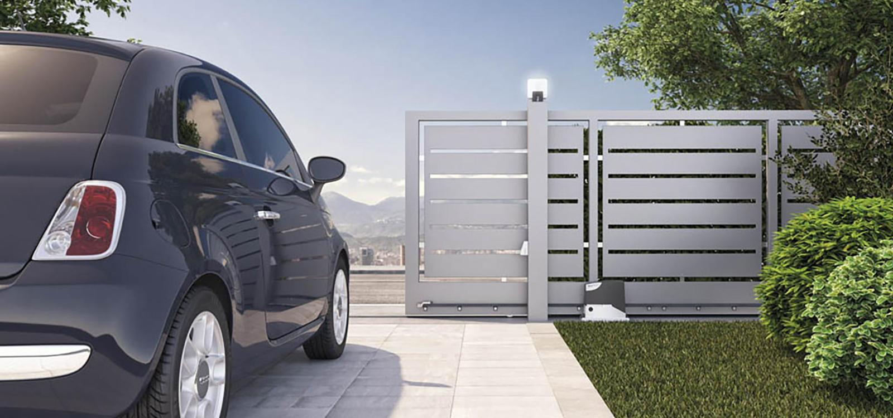
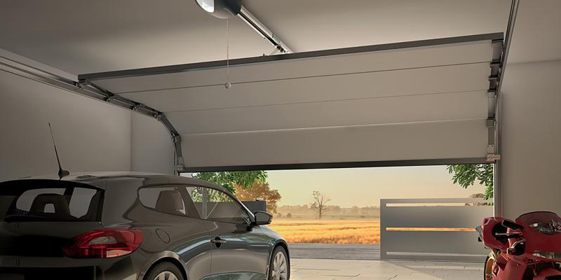

Swing gates are a popular choice for residential and commercial properties, as they are easy to operate and provide a high level of security. Selcon is a company that specializes in the installation of swing gate automation systems, which provide convenience and safety to property owners. With the use of advanced technology and high-quality materials, Selcon ensures that their swing gate automation systems are reliable, durable, and efficient. Overall, swing gate automation is a great solution for those who value convenience, security, and peace of mind.
SLIDING GATE

Selcon is a firm that specializes in the installation of automated sliding door systems. Sliding door automation refers to the process of motorizing the opening and closing of sliding doors, providing increased convenience, accessibility, and safety for a range of properties, including commercial, retail, and healthcare buildings. Selcon's sliding door automation systems are powered by electricity and can be operated using a variety of control methods, such as sensors, push buttons, or remote controls. They can also be customized to fit the specific needs and design preferences of their clients. With their expertise in sliding door automation, Selcon can help enhance the functionality, aesthetics, and overall user experience of a property.
ROAD BARRIER
Road barriers are gate automation systems that control vehicle access to various locations. They consist of a horizontal boom arm that can be operated manually or automatically using electric motors. Selcon specializes in installing and maintaining customized road barrier systems that offer added security and safety features such as obstruction sensors.
GARAGE

Selcon is a leading firm in the installation and maintenance of garage door automation systems. They offer a range of customizable solutions to fit the unique needs of their clients, whether it's for residential or commercial properties.
Garage door automation systems provide a convenient and secure way to access a garage without having to manually open or close the door. These systems can be operated by remote control, keypads, or motion sensors, allowing for easy and efficient access.
Selcon's team of experts can provide advice on the best type of garage door automation system to fit the client's needs. We offer a variety of systems, such as belt-driven, chain-driven, and screw-driven garage door openers, that are designed to fit various garage door types and sizes. They also provide installation, maintenance, and repair services to ensure that the system remains functional and reliable.